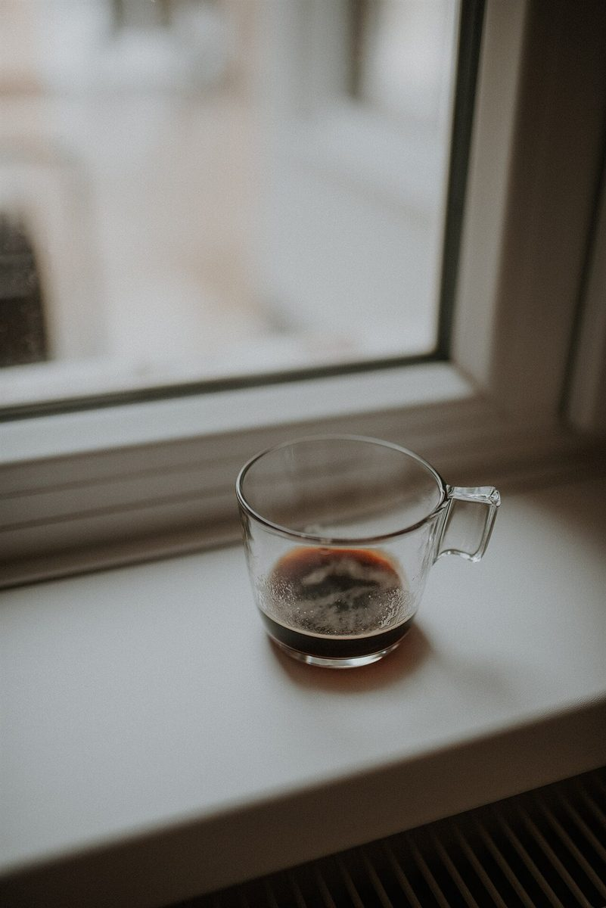
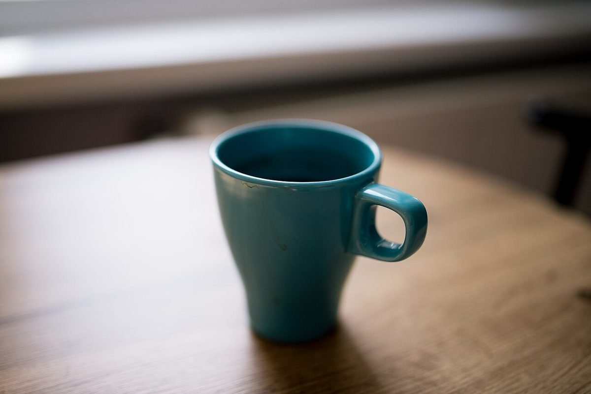
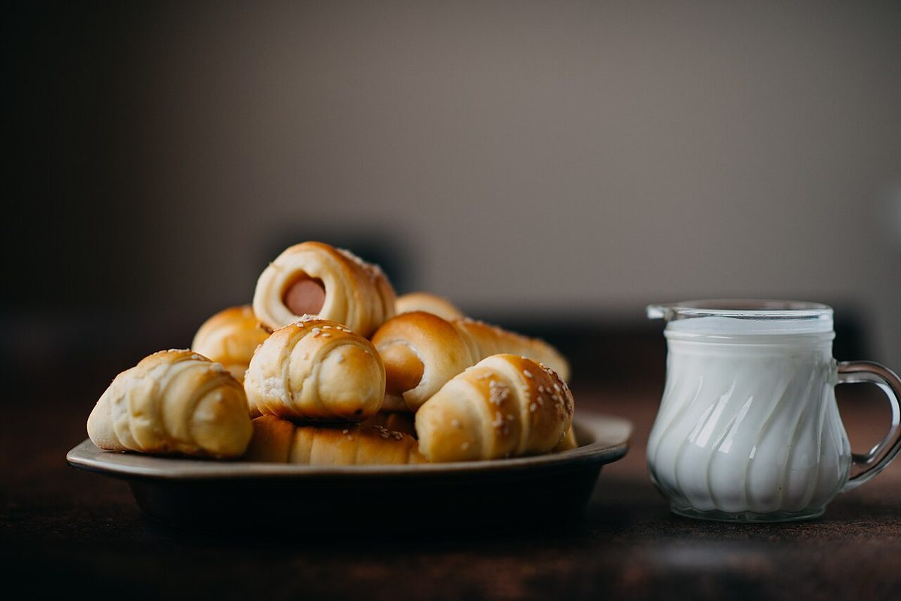
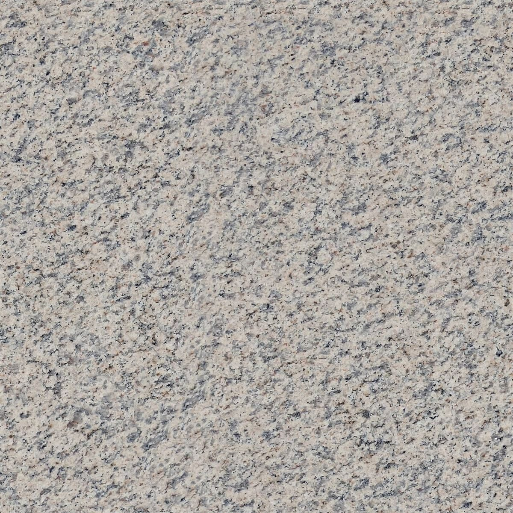

店のこと
店のこと
お店について確認できているのは、所在地とInstagramのアカウントだけです。
このページの「ならべてみる」部分は、制作側が作った見せ方です。お店の実際の様子・考え・メニューとは関係がありません。
確認できていること
- 店名は「想い堂(おもいどう)」、業種はカフェ
- 所在地は福岡県田川郡福智町弁城3391(〒822-1212)
- 電話番号はなし。連絡はInstagramから
- 営業時間・定休日・メニュー・価格・ご予約・駐車場は準備中

ならべてみる
小さな球を、棚に4つ
由来は分かりません。ここでは制作側の連想として、「想い」を飾り物の球になぞらえ、国外・撮影地不明の写真を4つ並べてみました。お店に球の飾りがあるという意味ではありません。



